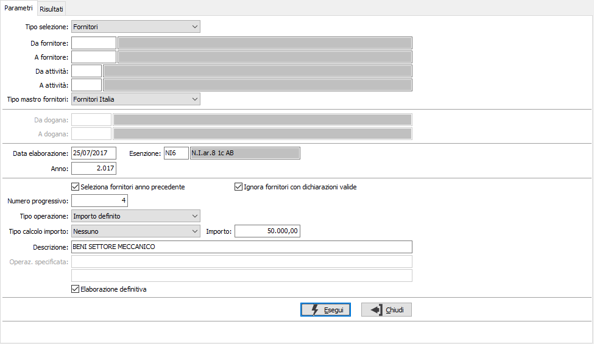
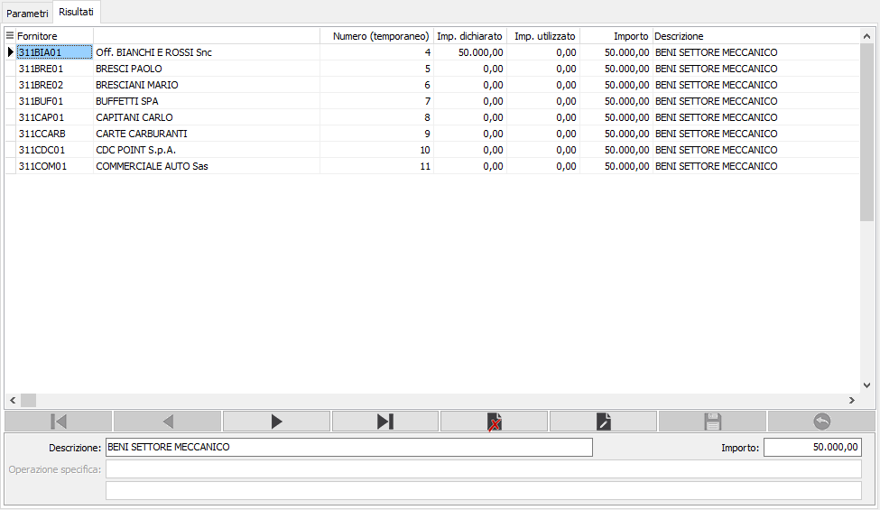

Generazione dichiarazioni di intento fornitori
La procedura consente di generare le lettere d’intento da inviare ai fornitori; questa operazione si rende necessaria per tutte le aziende che operano con l’estero all’inizio di ogni esercizio, per i fornitori con cui si intrattengono rapporti e comunque ogni qualvolta si operi con un nuovo fornitore a cui si vuole inviare la dichiarazione.

Il programma permette di generare le dichiarazioni per i fornitori o per le dogane, in base a quanto impostato nel campo “Tipo selezione”, impostando la generazione dei fornitori è possibile effettuare la selezione di questi per codice, per attività e per tipo mastro; per ogni fornitore selezionato viene generata una lettera d’intento con numerazione progressiva (il primo numero disponibile viene visualizzato nel campo “Numero progressivo”) e in fase di generazione definitiva vengono riportati gli estremi della lettera di intento in anagrafica fornitore. È anche possibile selezionare i fornitori per cui generare le lettere in base a quelli a cui nell’anno precedente era stata già inviata la lettera attivando il flag “Seleziona fornitori anno precedente”, ed includere o meno i fornitori con dichiarazione valida per l’anno elaborato tramite l’attivazione del flag “Ignora fornitori con dichiarazioni valide”, attivando questo flag vengono esclusi dall’elaborazione anche i fornitori su cui è indicato un codice esenzione diverso da quello utilizzato per le lettere d’intento. L’aliquota Iva presente nel campo “Esenzione”, il tipo operazione (operazione specifica o importo definito) e la descrizione vengono proposti in base a quanto impostato in configurazione del modulo. Per poter proseguire nell’elaborazione è indispensabile indicare l’importo da riportare nelle singole dichiarazioni, nel caso di selezione dei fornitori dell’anno precedente viene attivato il campo “Tipo calcolo importo” in cui è possibile indicare il tipo di importo da proporre in fase di generazione, che può essere:
Nessuno: viene proposto l’importo indicato nel campo “Importo”
Importo dichiarato anno precedente: viene proposto il totale delle lettere dell’anno precedente inserite con il tipo operazione impostato sopra
Importo utilizzato anno precedente: viene proposto il totale dei documenti assegnati alle lettere dell’anno precedente inserite con il tipo operazione impostato sopra

Nella maschera dei risultati vengono visualizzati i fornitori/dogane elaborati in base ai paramenti indicati, nelle colonne “Imp. dichiarato” e “Imp. utilizzato” vengono riportati gli importi delle dichiarazioni presenti per l’anno con il tipo operazione impostato nei parametri, sul campo Importo viene proposto il valore in base a quanto impostato. Con carattere rosso vengono visualizzati i fornitori per cui per l'anno in corso sono presenti più di una lettera valida, in nero i fornitori senza lettera o con una sola lettera valida. In questa fase è possibile eliminare il record relativo al fornitore per cui non deve essere generata la dichiarazione, oppure modificare l’importo proposto o le descrizioni. Sempre in questa maschera viene visualizzato il numero di lettera temporaneo calcolato in fase di prima elaborazione, in fase di salvataggio viene ricalcolato il numero progressivo che può non coincidere con il numero visualizzato a video nella colonna “Numero (temporaneo)” nel caso in cui siano stati cancellati dei fornitori elaborati.
Tramite i bottoni di stampa presenti sulla toolbar o tramite gli appositi tasti funzione è possibile stampare i dati visualizzati nella maschera dei risultati. Effettuando il salvataggio tramite il bottone presente sulla toolbar o tramite il tasto funzione F10 vengono generate le dichiarazioni visualizzate a video.